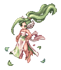
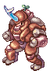

Mel's Elemental Master Guide
| This guide is still in development... | |
|---|---|
| Yes, I stole this from Loomus. |
Instead of telling people to not play DPS Sorc ingame, I'll now have a Wiki Page to do that work for me. BUT IT'S REALLY WIP
ALSO YES YES, IT'S ELE MASTER NOW, WILL CHANGE THINGS ACCORDINGLY WITH TIME. GUIDE'S NOT EVEN FINISHED AFTER 32 YEARS ANYWAY
28/04/2023: done with sage descriptions, moving to prof

| |||||
Job Base:
|
Sage / Professor / Sorcerer
| ||||
Written by:
|
Melz
| ||||
Job Bonuses (@ Jlvl 70)
| |||||
STR
|
AGI
|
VIT
|
INT
|
DEX
|
LUK
|
| +4 | +4 | +8 | +13 | +9 | +5 |
Elemental Master Updates
This is a list of updates to the game announced specifically after the guide was started. Strikethrough means it's already implemented in the NovaRO server.
Mage and Sage skill rework
Professor skill rework
Sorcerer skill rework[5] https://www.novaragnarok.com/forum/news/kro-job-improvement-patch-notes-155-r331/
[4] https://www.novaragnarok.com/forum/topic/13932-class-updates-and-monster-hunting-developers-blog/
[3] https://www.divine-pride.net/forum/index.php?/topic/4665-kro-changelog-july-22-2020/&tab=comments#comment-8000
[2] https://www.divine-pride.net/forum/index.php?/topic/3723-kro-jobs-improvement-project/&do=findComment&comment=7644
[1] Announced on 07/05/2020: https://www.divine-pride.net/forum/index.php?/topic/3723-kro-jobs-improvement-project/page/6/&tab=comments#comment-7488
Elemental Master[5] https://www.novaragnarok.com/forum/news/skill-rebalance-patch-notes-195-r400/
[4] https://www.novaragnarok.com/forum/news/4th-job-patch-notes-188-r391/
[3] https://www.divine-pride.net/forum/index.php?/topic/3723-kro-jobs-improvement-project/&do=findComment&comment=11126
[2] https://www.divine-pride.net/forum/index.php?/topic/3723-kro-jobs-improvement-project/page/11/#comment-9805
[1] https://www.divine-pride.net/forum/index.php?/topic/4672-kro-fourth-class-jobs-skills-info-and-related-items-updated-11092020/&tab=comments#comment-8034
Reworked elemental tables GOD FUCKING BLESS
Acknowledgements
Here goes my special thanks to those who helped (and put up) with the process of creating this guide, in no particular order:
|
|
|
|
|
About the author, and some ranting
Hello. I'm Mel, the player behind these:


This guide is the distillation of all my hatred, acquired after playing damage dealer Sorc everything I've learned so far; maybe it can be of use to other Sage class lovers out there.
Beware though, I'm a salty motherfucker. Have this disclaimer.
| D I S C L A I M E R
IS IT STILL VALID AFTER 4TH UPDATE? MOST LIKELY YES |
|---|
I must stress that, in the current state of the game, the Sage branch is a very underwhelming class from a DPS perspective. Some factors hold it back:
Sorcerer & Elemental Master's damage per second is very bad when compared to other magic users. The class either needs a rework from Gravity, or equipment that has yet to come to the server. Although, even if the problem is equipment related, Sage classes will still lag behind other magic damage dealers. |
If you have any questions, or suggestions for this guide, message me either ingame or Discord (melzdash#6752).
With that out of the way, let's get to it.
[1] Introduction
So, the thought process I've put into my guide goes like this:
- Explain mechanics that are relevant to magic classes. It's really important to know how the game works on a fundamental level, since these directly affect how to build your character, and teach what to expect (moreso in terms of dealing damage) when reading the information of a certain monster.
- With basic mechanics in your head, you're now able to comprehend how to better utilize your skillset. I'll elaborate, when necessary, about effects or usage of a skill.
On a quick side note: the skill section is particularly important for this class, since Professor and Sorcerer have quite a big arsenal at their disposal. A good understanding of your spells will enable the knowledge of what to sacrifice and what to prioritize; the Sage branch is infamous for being short on skill points.
- The builds and gameplay section is the natural follow-up: you'll know what each build excels at, its barebones structure in terms of skill and status points distribution, and some guidance on how to play them.
- Levelling actually isn't a very pleasant experience if you're a solo Sage, and that's my focus with this section in particular.
- This is probably what most of you are after: what end-game gear does sorcerer use? For those after the entire levelling experience, an attempt was made into describing what an actual gear progression looks like.
- The theorycrafting corner is there to showcase my experimentations, illustrating (with numbers) how end-game gears (mostly) fare against one another.
Have fun.
[2] A quick aside for beginners
If you're new to Ragnarök Online, there is some stuff you should know to make your start on the server a bit easier.
And remember: you can only get good at this game by being curious and seaching what you need to know. The Useful Links section can give you a starting point when seeking for info.
Click on Expand to visualize the content from the sections below.
[2.1] Shortcuts, Commands and some Misc
- 1) Set some commands to turn on when you log in the server through the NPC Login Settings, inside the Main Office (
@navi main_office 214 184). Desirable commands are:@autoloot,@noksand@blind.@hidepetmight be useful, if you don't want to see yours and another's pets. Other good commands to input are/quake(removes the "shaking" effect that some skills have) and/wi(makes windows "stick" on each other).
/fastrefreshis great to cut the fading animation that occurs whenever you teleport/fly wing.@nopickupwill prevent you from picking items from the floor, and can be toggled.@gowill warp you to a city whose number or abbreviation you know; typying the command without any inputs will give you the list of available locations and their respective codes.@pityis the latest addition, and will display information pertaining to the drop of costume stones.
- 2) If you know an item's name or ID, you can search for its information with the command
@ii(e.g.@ii fabre card).
- 3) To search items sold by player vends, use the ingame command
@ws(e.g.@ws fabre card), or in NovaRO's market site. Alternatively, if you wish to search items sold by NPCs,@wnis what you seek (e.g.@wn meat).
- 4)
Alt + Mcontrols emotes you have in certain shortcuts. But you don't necessarily need to have just emotes in there; any command or text can be inserted, saving you time to type something you use often over and over again. As an example, this is what myAlt + Mlooks like:
- 5) In the same vein as nº4, BM/Shortcut Settings can be modified as we see fit. Something I enjoy changing is moving the F1-F9 shortcuts to 1-9. And learn how to use Battlemode, if you want to use your entire keyboard for skills, consumables and equipment swaps.
- 6) A very useful shortcut (that I wish anybody told me way earlier) is
Alt + Right Click, in order to quickly send items from your inventory to the Kafra Storage, and vice versa. Just remember that this shortcut moves the maximum amount of said item; to choose the amount, you still need to drag. This action also works between your inventory and merchant classes' cart.
- 7) NovaRO has the Reset Man NPC inside Main Office's basement (
@navi main_office 209 128), so don't worry about making mistakes in your Status and Skill builds.
- 8) After resetting, it'll soon become a hassle to click the little arrows in the Status window (
Alt + A) to distribute your points. In order to save time (and mouse clicks), you can simply insert the command/"stat"+ "desired amount". Remember that if you wish to have 120 Dexterity after resetting, typing/dex+ 120will result in 121 base Dex, since there's already 1 point allocated to it.
- 9) The favorites tab on your inventory is great to keep items that you absolutely don't wanna sell; just drag them to it, and later click the small lock to prevent the items inside it from showing in any NPC selling window.
- 10) Go read iROwiki's page on basic controls to learn more about the game, I guess? Knowledge is power.
- 11) Speak with Devon Aire inside Main Office's basement (
@navi main_office 174 127) to affiliate yourself to the Arc Wand Clan, and grab the easy extra 1 point to Dex&Int. Keep in mind that Clans aren't Guilds; you can be in/create a guild and still benefit from the Clan's bonuses.
[2.2] How to make Zeny
Economy is a very important part of RO, since it enables you to buy items that other players no longer desire (and sell your own unwanted items). I'll give a few basic tips on how to make money below, but reading the Zeny Guide and Farming 101 is indispensable if you wish to understand more about it, specially the Farming section.
Just keep in mind one thing: unless you know what you're doing, Sorcerer shouldn't be your farmer.
- 1) Make a merchant, even if you intend to play another class. You don't need to job change it at first; the point is to have a character that can sell your loots at a higher price to NPCs via
 Overcharge, and buy cheaper consumables from these same NPCs with
Overcharge, and buy cheaper consumables from these same NPCs with  Discount.
Discount.
- 2) Level a class that is able to farm fast and safely. The Geffenia Farming Guide mentions two classes that can perform really well with a low budget: Rebellion and Mechanic. Ranger is another class that farms well (safe positioning through ranged damage and easy access to elemental advantage), but can't hold as much items. Genetic, with its rework, also turned out to be a pretty solid farming class, with great movespeed, damage and cart to hold more loot (but needs some investment to speed up Cart Cannon's cast time).
- 3) The aforementioned Geffenia Farming Guide also touches on an interesting topic: the
@alootcommand. It enables the player to create a list of specific items to be sent to your inventory (or not, if you blacklist them), while the rest falls to the ground. Just keep in mind to turn off the@autolootcommand, since it does make you loot everything at default behavior.
- 4) Another way of making money as a beginner is by participating in instances with another players. In this case, support classes shine the most. Their main role is to keep the party buffed and alive, and most of the time require minimal equipment to perform their duties. Minstrel and Arch Bishop are the most sought classes, with Wanderer and Sorcerer being more situational (but still essential when needed).
[3] General Mechanics
This section will touch on the inner workings of some game mechanics that are important to bear in mind when building magic classes in general.
The table below (adapted from https://ragnarok.gamepedia.com/Episode_Updates_(RO) ) lists changes that occured when Renewal was implemented in RO, considerably impacting the gameplay of magic classes. This information is included in here due to how I may discuss pre-Renewal times under some topics in order to elaborate onto specific points.
| Pre-Renewal (2002-2009) | Renewal (2009 - Current) |
|---|---|
| Players were able to achieve instant cast with high DEX and cards. | Most skill casting is now composed of both a fixed cast time and a variable cast time. |
| Old formulas made magic users very powerful in battle. | Revamped formulas nerfed magic users and buffed melee players. |
| Character performance was more stat-dependent. | Character performance became more gear-dependent. |
[3.1] Status
Status, or "Stats", is one part of the triad Status - Skills - Equipment that allows the player to customize a character's build. Back in pre-Renewal, stats exerted a much bigger influence on a build than equipments, as previously stated. This doesn't mean that one will be fine by randomly assigning these points, however.
Proper stat distributions will be explored under specific builds inside Builds and Gameplay section.
For simplicity's sake, each stat will only list effects that have relevance to the Sorcerer class. Consult iRO wiki's stat page for more detailed descriptions.
| Stats | |
|---|---|
| Stat | Description |
| Strength | Usually invested into in order to raise your weight limit, which is particularly intersting for farming or PvP.
Do note that only Str base points contribute to that end. Every 1 point;
|
| Agility | Mostly desirable for Spellfist builds, which rely on high ASPD for damage output.
Keep in mind that ASPD also contributes to skill spamming when ACD and Cooldowns aren't a limiting factor (they don't exist, or it's possible to deny the effects of such mechanics via equipment / buffs).
Every 1 point;
Every 5 points;
|
| Vitality | Essential for raising maximum HP.
Stun immunity is very important, whether you're DPS or Support.
Every 1 point;
Every 2 points;
Every 5 points;
|
| Intelligence | The main stat to invest in for magic damage. Int is specially important to Sorcerer, since many of the classes' damage formulas involve scaling with this stat. Also contributes to Instant Casting ([VCT, FCT and ACD]).
Every 1 point;
|
| Dexterity | Main stat when it comes to achieving Instant Casting via stats ([VCT, FCT and ACD]). Also has a minor contribution to ASPD.
Usually neglected on builds based around percentage VCT reductions.
Every 5 points;
|
| Luck | Secondary stat when it comes to raising magic damage.
It's important to stress that magic cannot crit. Critical hits observed in Spellfist autoattacks happen due to its physical portion, which has a negligible contribution to damage.
Every 3 points;
Every 5 points;
Every 10 points;
|
[3.2] Traits
Introduced with the 4th job update, the Trait system will appear in the Status menu (Alt+A) after evolving to a 4th job class, under Character Status:
INSERT ALT A IMAGE
Leveling past base level 200 will grant Trait points instead of Status points, which obey the following 2 rules:
- Every level grants 3 Trait points;
- Base levels divisible by 5 grant 7 Trait points instead of 3 (e.g. blvl 200 itself gives 7 points when you job change).
It is important to stress that the Trait system is completely independent from the Status system, which implies in an important defensive core mechanic: Def and MDef bypasses do not affect RES and MRES whatsoever.
Another interesting observation is that, unlike Status, Traits are much more straight forward in terms of substats. Therefore, even if STR had some relevance to mages due to its influence on weight limit, POW will be completely useless, as it affects physical damage exclusively.
| Traits | |
|---|---|
| Trait | Description |
| Power | Useless stat for Elemental Master, since it exclusively furthers physical damage.
Every 1 point:
Every 3 points:
|
| Stamina | Contributes to resisting physical damage. An specially useful trait for support builds, but also possible to spec into for damage Elemental Master.
Every 1 point:
Every 3 points:
|
| Wisdom | Contributes to resisting magical damage. An specially useful trait for support builds, but also possible to spec into for damage Elemental Master.
Every 1 point:
Every 3 points:
|
| Spell | The main stat to invest in for magic damage. As Int scaling was present in Sorcerer's AOE spells, so is SPL in Elemental Master's. Not quite useful for support builds though. Every 1 point:
Every 3 points:
|
| Concentration | The new jack-of-all-trades, CON will improve both physical and magical damage, while also offering some defensive capabilities via Flee bonuses.
Every 1 point:
Every 5 points:
|
| Creative | Useless stat for Elemental Master, since it exclusively furthers crit damage and healing power (Warmer and Insignias have a fixed healing rate, based on MaxHP).
Every 1 point:
Every 3 points:
|
| Sub-Traits | |
|---|---|
| Sub-Trait | Description |
| P.Atk | Increases final status physical attack and final equipment attack by 1% per point. |
| S.Matk | Increases final status magic attack and final equipment magic attack by 1% per point. |
| RES | Reduces physical damage taken, capping at 50%. |
| MRES | Reduces magical damage taken, capping at 50%. |
| H.PLUS | Increases heal power by 1% per point. |
| C.RATE | Increases critical damage percent modifier by 1% per point. |
[3.3] Activity Points (AP)
I've included this section to explain the new Activity Point (AP), a resource mechanic exclusive to 4th job skills.
CHARACTER PICTURE IN HERE
AP is visually depicted as the bottom bar, under SP, and will be progressively filled when 4th jobs skills are cast. The maximum amount of AP is 200, regardless of class.
It's important to stress that not all 4th job skills generate AP, so check their descriptions for that information. Elemental Master, for instance, will generate AP with their AOE skills,  Diamond Storm,
Diamond Storm,  Conflagration,
Conflagration,  Lightning Land, Terra Drive and Venom Swamp.
Lightning Land, Terra Drive and Venom Swamp.
The purpose of AP is to act as the single resource that allows the activation of certain “ultimate” skills. These ultimates consume variable amounts of AP, but one can assume that most of the 200 available AP is spent as a general rule. Elemental Master's Elemental Buster is an exception, having been reworked to consume 30 AP only.
Currently, there are 2 methods to obtain AP outside of spamming skills:
- Elemental Master's
 Increasing Activity;
Increasing Activity; - Summoner's
 Kisul Rampage.
Kisul Rampage.
NovaRO customized AP to halve upon death (the original behavior being losing all of it). Entering PVP arenas do not remove AP currently.
[3.4] Magic Damage vs. Magic Defense
Def and MDef are composed of 2 parts: "Soft" and "Hard".

- Soft Def/MDef is the value that comes from your stats, and will be subtracted from the damage you take. If your character has 250 soft mdef, and it takes 10000 damage, the final damage will be 9750.
- Hard Def/MDef comes from equipment, and reduces the damage taken by a certain percentage, according to the substat's formula. 50 mdef implies into a 30% reduction; therefore, 10000 magic damage will become 7000.
As seen in the example above, hard MDef is the portion of the substat that almost exclusively influences damage reduction. Monsters' MDef values act in the same way hard MDef does for players.
Back in pre-RE, both hard Def and MDef formulas were very straight forward:
1 point in hard Def/MDef = 1% physical/magical damage reduction
Renewal came, and Gravity (for whatever reason that I can't grasp, since the substat was perfectly fine) reworked both formulas, MDef one now being:
Damage after Hard MDef = Damage × [(1000 + HardMDef) ÷ (1000 + HardMDef × 10)]
Which results in the following graph:
As far as I understand, Gravity rebalanced both Def and MDef with PvP scene in mind.
YO FUCK MY EXCEL WHICH HAD A COMPILATION OF ALL MONSTERS' MDEF WAS LOST TOO LMAO RIP MY LIFE MAN
HOW CAN I KEEP GOING WITHOUT MY GRAPHS PEPEHANDS
[3.5] VCT, FCT, ACD and Cooldowns (with a bit of ASPD)
All of these substats will directly affect how spammable a skill is in RO. Concepts follow below:
- Cast Time : Conveyed by the green bar that appears on top of a character's sprite; when the bar reaches the gauge's end, the skill will be cast. Cast times may be:
- 1) Completely based on VCT;
- 2) Completely based on FCT;
- 3) Composed of both VCT and FCT.
- Variable Cast Time (VCT): VCT can be shortened by 2 different means: stats and percentage reduction (only available through specific gear / gear enchants / cards).
- Reaching Instant Cast (aka no more green bar, aka IC) via percentage sources is simple: sum up 100% or more, and it's done.
- The current formula for VCT reduction via stats is
(2 × Dex) + Int >= 530, and implies that as long as your total of "points" achieved through stats is at least equal to 530, your VCT will be non-existant. Examples:
145 total dex + 160 total int = 450 = 84,91% VCT reduction 175 total dex + 175 total int = 525 = 99,06% VCT reduction
180 total dex + 180 total int = 540 = 100% VCT reduction
265 total dex + 0 total int = 530 = 100% VCT reduction
- It's very important to stress that stat and percentage reductions stack MULTIPLICATIVELY, and not additively, meaning it's impossible to achieve IC if you're mixing both sources. If your 145dex / 160int stats are coupled with 35% VCT reduction from equipment, what happens is
84,91% + [(100 - 84,91) × 0.35]% = 90,19%, and not84.91% + 35% = 119,91%like one would intuitively assume.
- It's very important to stress that stat and percentage reductions stack MULTIPLICATIVELY, and not additively, meaning it's impossible to achieve IC if you're mixing both sources. If your 145dex / 160int stats are coupled with 35% VCT reduction from equipment, what happens is
- PS: Remember that if you receive Clementia from a joblvl 70 Arch Bishop, the 17 Int & Dex will give you 51 points towards Instant Cast.
- Fixed Cast Time (FCT): Unlike VCT, FCT can only be reduced (in a meaningful way) through equipment related means. FCT also doesn't allow additive stacking from different sources, which means AB's level 5 Sacrament (-50% FCT) and Temporal Dex Boots (-0.5sec FCT) do not sum up to -1 second of fixed casting.
- Cooldown (CD): Refers to the time that must be elapsed in order to reuse a skill. While on cooldown, a skill's icon will be superposed by a translucent gray running clock-like effect.
- After-cast Delay (ACD): this mechanic is also known as "global cooldown", meaning a skill's ACD doesn't affect only itself, but also other skills' activations. As an example, if one intends to cast Psychic Wave and then Diamond Dust, DD won't be available until PW's one second ACD timer is over. ACD is also represented by the translucent gray clock effect, but doesn't combine with Cooldown like the duo VCT & FCT.
- The amount of needed ACD for a certain skill can be calculated in lela's gitlab.
- Attack Speed (ASPD): Consider that you, player, were finally able to achieve the means to nullify Diamond Dust's cast time, ACD and cooldown.
- QUESTION: how many DDs can you spam in the space of a second? As many times as you can click (10 times maybe)? Because well, there's technically nothing holding your sorcerer back, right?
- Wrong. That's where ASPD enters the scene.
- Every auto-attack and skill triggers an animation, meaning a certain number of frames is displayed at a certain speed. And it's ASPD that will dictate how fast this attack animation runs.
- With this in mind, let's check the ASPD graph below:

- 193 is the maximum possible ASPD, equating to 7 complete attack animations per second. This hard cap also applies to spamming skills, thus allowing a player to cast 7 spells per second at most.
- One important observation here, though, is that 193 ASPD is necessary for max spam on skills that actually display an animation (Sorcerer extends their hand with every action performed). Warlocks stand perfectly still while executing their
 Chain Lightning spam; since there's no animation going on, CL builds specifically do not need 193 ASPD to reach 7 skill casts per second (as illustrated in HairyWizard & Hayleen's WL guide).
Chain Lightning spam; since there's no animation going on, CL builds specifically do not need 193 ASPD to reach 7 skill casts per second (as illustrated in HairyWizard & Hayleen's WL guide).
@spam
[3.6] Tables of Elemental Advantage / Disadvantage
Any monster can be classified under 4 main characteristics: Race, Property, Size and Boss protocol (a monster is either normal, or a boss).
Property is the one that defines the element of a monster, and has 4 levels: the higher the level, the more attuned said monster is to the element, and stronger its influence will be.
It's a given that any class should try to abuse elemental advantages in order to deal (or mitigate) more damage, but this concept is core to magic classes, since offensive spells (generally) cannot have their own element changed.
Mage classes were always meant to rotate spells, choosing the optimal skill according to the enemy in front of them. Gravity coughpoopedcough on this concept with the passing of the years, causing the mage branch (and more specifically Sorcerer, who doesn't have a spammable offensive skill by default) to get the short end of the stick, when compared to Performers' rework or Soul Reaper's pseudo-elemental freedom.
Anyway, always research your enemies and use the tables to understand how to maximize damage output. The tables' values are percentages, meaning a Fire 3 monster will be hit by 200% damage of any water attack.
| Original RO tables [AAAAAAAAAAAA] | ||||||||||||||||||||||||||||||||||||||||||||||||||||||||||||||||||||||||||||||||||||||||||||||||||||||||||||||||||||||||||||||||||||||||||||||||||||||||||||||||||||||||||||||||||||||||||||||||||||||||||||||||||||||||||||||||||||||||||||||||||||||||||||||||||||||||||||||||||||||||||||||||||||||||||||||||||||||||||||||||||||||||||||||||||||||||||||||||||||||||||||||||||||||||||||||||||||||||||||||||||||||||||||||||||||||||||||||||||||||||||||||||||||||||||||||||||||||||||||||||||||||||||||||||||||||||||||||||||||||||||||||||||||
|---|---|---|---|---|---|---|---|---|---|---|---|---|---|---|---|---|---|---|---|---|---|---|---|---|---|---|---|---|---|---|---|---|---|---|---|---|---|---|---|---|---|---|---|---|---|---|---|---|---|---|---|---|---|---|---|---|---|---|---|---|---|---|---|---|---|---|---|---|---|---|---|---|---|---|---|---|---|---|---|---|---|---|---|---|---|---|---|---|---|---|---|---|---|---|---|---|---|---|---|---|---|---|---|---|---|---|---|---|---|---|---|---|---|---|---|---|---|---|---|---|---|---|---|---|---|---|---|---|---|---|---|---|---|---|---|---|---|---|---|---|---|---|---|---|---|---|---|---|---|---|---|---|---|---|---|---|---|---|---|---|---|---|---|---|---|---|---|---|---|---|---|---|---|---|---|---|---|---|---|---|---|---|---|---|---|---|---|---|---|---|---|---|---|---|---|---|---|---|---|---|---|---|---|---|---|---|---|---|---|---|---|---|---|---|---|---|---|---|---|---|---|---|---|---|---|---|---|---|---|---|---|---|---|---|---|---|---|---|---|---|---|---|---|---|---|---|---|---|---|---|---|---|---|---|---|---|---|---|---|---|---|---|---|---|---|---|---|---|---|---|---|---|---|---|---|---|---|---|---|---|---|---|---|---|---|---|---|---|---|---|---|---|---|---|---|---|---|---|---|---|---|---|---|---|---|---|---|---|---|---|---|---|---|---|---|---|---|---|---|---|---|---|---|---|---|---|---|---|---|---|---|---|---|---|---|---|---|---|---|---|---|---|---|---|---|---|---|---|---|---|---|---|---|---|---|---|---|---|---|---|---|---|---|---|---|---|---|---|---|---|---|---|---|---|---|---|---|---|---|---|---|---|---|---|---|---|---|---|---|---|---|---|---|---|---|---|---|---|---|---|---|---|---|---|---|---|---|---|---|---|---|---|---|---|---|---|---|---|---|---|---|---|---|---|---|---|---|---|---|---|---|---|---|---|---|---|---|---|---|---|---|---|---|---|---|---|---|---|---|---|---|---|---|---|---|---|---|---|---|---|---|---|---|---|---|---|---|---|---|---|---|---|---|---|---|---|---|---|---|---|---|---|---|---|---|---|---|---|---|---|---|---|---|---|---|---|---|---|---|---|---|---|---|---|---|---|---|---|---|---|---|---|---|---|---|---|---|---|---|---|---|---|---|---|---|---|---|---|---|---|---|---|
| ||||||||||||||||||||||||||||||||||||||||||||||||||||||||||||||||||||||||||||||||||||||||||||||||||||||||||||||||||||||||||||||||||||||||||||||||||||||||||||||||||||||||||||||||||||||||||||||||||||||||||||||||||||||||||||||||||||||||||||||||||||||||||||||||||||||||||||||||||||||||||||||||||||||||||||||||||||||||||||||||||||||||||||||||||||||||||||||||||||||||||||||||||||||||||||||||||||||||||||||||||||||||||||||||||||||||||||||||||||||||||||||||||||||||||||||||||||||||||||||||||||||||||||||||||||||||||||||||||||||||||||||||||||
| NovaRO's Monster Hunter table [AAAAAAAAAAAA] | |||||||||||||||||||||||||||||||||||||||||||||||||||||||||||||||||||||||||||||||||||||||||||||||||||||||||||||||||||||||||||||||||||||
|---|---|---|---|---|---|---|---|---|---|---|---|---|---|---|---|---|---|---|---|---|---|---|---|---|---|---|---|---|---|---|---|---|---|---|---|---|---|---|---|---|---|---|---|---|---|---|---|---|---|---|---|---|---|---|---|---|---|---|---|---|---|---|---|---|---|---|---|---|---|---|---|---|---|---|---|---|---|---|---|---|---|---|---|---|---|---|---|---|---|---|---|---|---|---|---|---|---|---|---|---|---|---|---|---|---|---|---|---|---|---|---|---|---|---|---|---|---|---|---|---|---|---|---|---|---|---|---|---|---|---|---|---|---|
| |||||||||||||||||||||||||||||||||||||||||||||||||||||||||||||||||||||||||||||||||||||||||||||||||||||||||||||||||||||||||||||||||||||
[3.7] How to calculate modifiers in RO
This section seeks to elucidate how modifiers in RO affect one's final damage, and how to balance them out.
First, assume that you, the player, wants to partake in some good PvP action. Players are "monsters" with Medium size, Demihuman race and Neutral element (assuming one doesn't use elemental armors, which would cause them to have said element at level 1). Also, since I'm a lazy bum and unwilling to create a magic example, let's say the PvP weapon we wish to create is a 3-slotted katar. Card options are:
- Contaminated wanderer (+30% damage to medium size)
- Hydra Card (+20% damage to demihuman race).
There are also cards (and enchants) that affect damage based on element, but it's dangerous to assume anything in pvp (one could choose to have advantage over the neutral element, though). In Ragnarok Online, different modifiers multiply, and same modifiers add up. Some 3-card variations for a pvp katar would look like this:
3 Conta Wand = (1 + 0.3 × 3) = 1.9 3 Hydra = (1 + 0.2 × 3) = 1.6 2 CW + 1 Hydra = (1 + 0.3 × 2) × (1 + 0.2) = 1.92 1 CW + 2 Hydra = (1 + 0.3) × (1 + 0.2 × 2) = 1.82
As you see, although marginal, the most efficient combination is 2 Contaminated Wanderer and 1 Hydra card.
But not only characteristics pertaining to a monster (Race, Size, Property, Boss/Normal) need to be balanced in order to reach optimal damage. The player's own substats must be taken in consideration, them being:
- Flat MAtk
- Percentage MAtk
- Elemental modifiers
- Skill modifiers
Whenever I mention the necessity of "balance", it's due to the graph below:

Consider Mods A and B, which vary in value from 1 to 100 each, with mod A starting at 1, and mod B at 100.
Since mods A and B are different, they multiply each other, according to RO's mechanics. Analyzing the graph, it's clearly noticeable that the curve reaches its highest when both A's and B's values are closest to each other.
This very simplified example goes to show how over-investing in a single mod can actually cause your character to deal less damage.
Have another:
220% skill mods × 120% elemental mods (340 "total") = 2.2 × 1.2 = 2.64 170% skill mods × 170% elemental mods (340 "total") = 1.7 × 1.7 = 2.89
This concept is called diminishing returns: even if you can go higher on some modifier, depending on the values you're sitting on it's probably better to invest in another modifier, in order to reach a better result.
Now, of course this isn't a rule set in stone; there are times when you actually don't have that much freedom to choose mods, or your budget doesn't allow you to go further into minmaxing territory (because yes, it's expensive af). Just use these tips to reach the best possible damage output within your limitations.
MAKE GRAPH USING MUH'S CALC OK
[4] Skills
In the following subsections, the skills from Elemental Master and its base classes will be enumerated, with what I judge to be the most pertinent portion of their descriptions. You can check Divine Pride's links on skills' names for more details; iRO wiki's page and NovaRO's Sorcerer page can also offer more info. Each skill will also be accompanied by a brief commentary on its mechanics, and not so obvious tips on usage whenever possible.
A quick reminder about Mage and Sage's Platinum Skills. Those are skills that are originally obtained via quests, but should be awarded to you as soon as you change jobs with the Job Master NPC, in Main Office's first floor (@navi main_office 183 186). If for some reason you don't have those, talk to the Platinum Skill NPC in Main Office's basement (@navi main_office 188 127).
[4.1]  Mage Skills
Mage Skills
Having acquired clarity of the world's elements, the Novice's journey has led him towards the path of becoming a Mage - a relentless pursuer of refined knowledge and power. Although often mistaken as emotionless individuals, a Mage's stoic demeanor is derived from absolute confidence in their erudition. |
The magic users from the original 6 base classes, Mages are damage dealers that will often stay safe in the backline of a party, killing enemies from afar. Their offensive spells are imbued with fixed elements, which makes proper knowledge of elemental advantages extremely important if one wishes to deal optimal damage.
Due to cast times, Mages are stationary damage dealers, unable to move until their spells are deployed. Therefore, it's natural for these frail individuals to know not only of offensive spells, but also defensive and disabling ones, in order to preserve themselves from harm.
| Mage | ||||||||||||||||||||
|---|---|---|---|---|---|---|---|---|---|---|---|---|---|---|---|---|---|---|---|---|
| Skill | Effects | Notes | ||||||||||||||||||
 Cold Bolt Cold Bolt
|
|
Mage's bread and butter. All of these spells deal damage according to the level of the skill, each level adding one bolt with 100% MAtk modifier.
The final damage of the skill is shown as a yellow number, representing the sum of each Bolt's individual damage; this implies that these skills aren't a true multihit, and the entirety of the damage is already dealt when cast time ends, even though the visual representation shows otherwise. Levelling with these skills at lvl 10 is only feasible when using Bolt skills are the foundation of Sorcerer's | ||||||||||||||||||
 Fire Bolt Fire Bolt
| ||||||||||||||||||||
 Lightning Bolt Lightning Bolt
| ||||||||||||||||||||
 Frost Diver Frost Diver
|
|
This skill's main perk is the chance to inflict Freeze status, which will render the opponent immobile, and force their element to water 1 (considering they're vulnerable to the status). A frozen opponent will stay disabled until any attack hits them, or enough time passes for the status to be cancelled.
Besides the obvious crowd controlling effect, the forced element change makes the opponent receive 150% damage from the next wind attack. | ||||||||||||||||||
 Fire Ball Fire Ball
|
|
One of Mage's levelling tools, with relatively short cast. For better efficiency, one should try to mob enemies before spamming this skill.
| ||||||||||||||||||
 Fire Wall Fire Wall
|
|
Places a wall of fire on the ground, which will knock back enemies that walk into its cells, inflicting fire property damage. The skill has a total cast time of 0.7 seconds at lvl 10 and will last for 12 hits, resulting into a significant window of time where you can reposition and cast your more powerful spells. Make sure to be always behind Fire Wall's 3 cell width, or the mob might simply walk beside it and reach your character anyway.
When dealing with opponents that have high movespeed or are undead (undead race cannot be knocked back, stoned or frozen), FW's 12 hits may not be enough; that's when Vertical Fire Wall comes into play. Vertical FW can be achieved by placing FW on the cells directly adjacent to a character's model, as seen in this old video. | ||||||||||||||||||
 Thunderstorm Thunderstorm
|
|
Thunderstorm isn't a very popular skill choice, and that's due to its own design and level it is available to be learned at. It's an AOE, meaning it could deal with mobs, but a party of low level players will most likely kill one monster at a time regardless.
Mage also isn't very well suited to mob by themselves. One could It also has a fairly long casting time (6 seconds at lvl 10), which doesn't allow the mage to mob water monsters and straight up Thunderstorm. Finally, a Mage could attempt to A caveat must be made in here though. A Mage going into Sage will not learn many more offensive spells, making Thunderstorm a legitimate choice in the long run, when the character will have better casting time due to higher Dex, Int and gears. | ||||||||||||||||||
 Stone Curse Stone Curse
|
|
At level 6 and above, Stone Curse will only consume a red gemstone when the skill succeeds, and will apply the Stone status, which consists of 2 phases:
Keep in mind that recasting the skill on a Stoned opponent will undo the debuff. Besides the obvious crowd controlling effect, the forced element change makes the opponent receive 150% damage from the next fire or poison attack. | ||||||||||||||||||
 Napalm Beat Napalm Beat
|
|
Never actually used this skill for levelling purposes. It will be the first skill you skill up in order to unlock  Soul Strike, and that's as far as it'll go. Soul Strike lvl 3 already outdamages lvl 10 Napalm Beat. Soul Strike, and that's as far as it'll go. Soul Strike lvl 3 already outdamages lvl 10 Napalm Beat.
There's really not much incentive to invest here beyond the points required to unlock other skills. Even if | ||||||||||||||||||
| Soul Strike
|
|
I heavily favor Soul Strike when levelling, due to its fast cast and decent damage. The extra damage to undead monsters (Skill Level × 5%) is also very convenient, which made me design a route to blvl 85 based only on hunting said race (later explained in the levelling section).
I'd only go for | ||||||||||||||||||
 Increase SP Recovery Increase SP Recovery
|
|
A simple passive, which improves SP recovery with a tick of its own plus extra effectiveness for SP restoring consumables. | ||||||||||||||||||
 Sight Sight
|
|
Reveals opponents under  Hiding and Hiding and  Cloaking around the caster. This skill tends to see more use in PVP, but PVM may demand it against monsters with the aforementioned skills. Cloaking around the caster. This skill tends to see more use in PVP, but PVM may demand it against monsters with the aforementioned skills.
| ||||||||||||||||||
 Safety Wall Safety Wall
|
|
Creates a light pillar on a targeted cell that blocks every form of close range physical damage until its durability wears off or it expires. Do note that very strong moves can break SW straight away, since the skill can only absorb so much damage, but you won't get hit by the "leftover" damage.
As an example, if a 30k HP SW gets hit by 1 million damage, the entire 1m is negated, and SW disappears. Beware that | ||||||||||||||||||
 Energy Coat Energy Coat
|
|
Reduces damage depending on your current percentage SP:
Energy Coat drains a percentage of your SP with every hit, so enemies hitting you at high ASPD will shred your SP; at 0 SP, the next hit taken will cancel the skill, and you'll have to recast it. | ||||||||||||||||||


[4.2] Sage Skills
It isn't unusual for some Mages to feel a stronger inclination to the comprehension of Magic's inner workings, instead of learning stronger spells. In recognizing these differing philosophies, the Schweicherbil Magic Academy was established to aid those in their countless hours of study to become Sages. |
Sages are a PvP-oriented class with the role of caster/anti-Mage. They do not have the offensive abilities of a Wizard, but shine in their defensive abilities, centered around Land Protector and Dispell.
Many of their skills can only realistically be used in PvP, making PvM quite difficult. Thus, when griding for levels, Sage often plays a supportive role by endowing elements to their allies' weapons and casting Mage's bolt skills as auxiliary damage.
Battle Sage was a "for fun" build in pre-RE, being a powerful solo leveling method when matched with Soul Linker's Sage Spirit.
| Sage | ||
|---|---|---|
| Skill | Effects | Notes |
 Earth Spike Earth Spike
|
|
Almost an earth version of the Bolt spells. The skill was buffed at some point, so it now deals the same total damage as its siblings.
Earth Spike can damage and reveal hidden enemies, just like its AOE counterpart, Earth Spike cannot be used inside |
 Heaven's Drive Heaven's Drive
|
|
Usually used in PvP modes. Useful to reveal the thief classes and Doram. Also nullifies Doram's root,  Silvervine Root Twist; this works on yourself, allies and enemies. Silvervine Root Twist; this works on yourself, allies and enemies.
As a levelling tool, Heaven's Drive poses similar problems as |
 Deluge Deluge
|
|
Each terrain boosts its corresponding element's damage (both physical and magical), while also granting a few perks to players standing inside their AOE:
If you have an active Volcano, Deluge, or Violent Gale on the map, consecutive casts of the same terrain do not consume any Gemstones; changing from Deluge to Volcano does consume a new blue gemstone, however. These skills cannot be cast on cells that are affected by any other ground skills, e.g., a previously laid Wall of Fog / Safety Wall / Pneuma will prevent any of these terrains to have their effects inside the already occupied area. One must first cast these terrains, and then follow up with the other desired ground skills. Only Insignias do not obstruct the cell placement of Deluge / Volcano / Violent Gale. |
 Volcano Volcano
| ||
 Violent Gale Violent Gale
| ||
 Land Protector Land Protector
|
|
One of Sage's most important skills. Clears almost any ground targeted skills (trap skills are an exception, such as Fiber Lock, Ankle Snare, Land Mine, Shockwave Trap, etc) and prevents most AOE magic damage inside its area.
A very important consideration must be made in regards to what is understood as magic AOE. There are currently 3 kinds of magic AOE skills in RO (beware that those are my own terminology):
Successive casts will consume another pair of blue & yellow gemstones, unlike the terrains' behavior previously mentioned. Only one of Volcano, Deluge, Violent Gale or LP can be cast at a time by the same player. If one casts their LP on top of another Sorcerer's LP, the overlapping section will be removed. In PVM, this destructive behavior is the reason why there are never 2 Sorcerers in a party (usually). In PVP, it implies into an offensive use of the skill, in order to gain ground against an enemy team. An interesting mechanic is that Land Protector prevents normal mobs from teleporting if they're standing on it; players are also affected by this property. |
 Frost Weapon Frost Weapon
|
|
Endows enchant an ally's weapon, bestowing them with the following properties:
Casting Endow will overwrite the weapon's native element, and other skills such as Aspersio and Endow itself. Each cast of Endow consumes a Point from the corresponding element. Points can be bought from the NPC Master of Elements ( |
 Flame Launcher Flame Launcher
| ||
 Lightning Loader Lightning Loader
| ||
 Seismic Weapon Seismic Weapon
| ||
 Auto Spell Auto Spell
|
|
Automatically casts spells when autoattacking, with a (2 * Auto Spell Level)%probability, at (Auto Spell Level / 2)% skill level. E.G.: Auto Spell level 10 will cast lvl 5 Cold Bolt at a 20% probability.
The available spells are:
After Soul Linker's Sage Spirit will allow Auto Spell to use the highest level of Bolt skills learned. Keep in mind that Auto Spell must be recasted after the soul link for the effect to take place. |
 Cast Cancel Cast Cancel
|
|
A good skill to use while leveling, in case you want to stop a long cast.
Usually unnecessary later on since everything is gonna be too fast for you to cancel anyway, but still has its uses on Spell Fist builds. |
 Dispell Dispell
|
|
Removes many, but not all, buffs and debuffs from the target. A list of undispellable buffs can be checked in Dispell's iRO wiki page.
In PVM, Dispell is usually used to remove skills like It's also possible to Dispell allies while holding |
 Magic Rod Magic Rod
|
|
Allows the Sorcerer to dodge any single target offensive magic for a short duration, while recovering (Skill Level × 20)% SP of the absorbed skill's original cost. If an enemy casts  Spell Breaker and is countered by this skill, the Magic Rod user will absorb 20% of the enemy's Max SP. Spell Breaker and is countered by this skill, the Magic Rod user will absorb 20% of the enemy's Max SP.
There are 3 important mechanics inside Magic Rod:
Magic Rod must be cast before the enemy spell hits you, so pay close attention to casting bars or cast it preemptively (which is often the case in PVP, where people will have Instant Cast). If your build has no ACD reduction, at least lvl 4 Magic Rod is necessary for complete immunity against a barrage of opposing single target spells. |
 Sense Sense
|
|
Hitting Esc will close Sense's window. Beware of multiple Senses though, since only the very first window will disappear with the aforementioned method; the player will have to close manually all the other subsequent ones.
|
| Spell Breaker
|
|
Gives you a 10% chance to break the cast of a boss monster, or 100% to break cast of a normal enemy (including players). In parties, Spell Break can be spammed against bosses that have cast bars to cancel their mechanics (e.g. Kimi's cast for Max Pain activation).
When successful, this skill at level 5 can damage any target by 2% of their max HP, including boss protocol monsters. |
 Advanced Book Advanced Book
|
|
Increases ASPD and ATK when equipped with a Book weapon.
An important skill for Spellfist builds, due to the ASPD bonus. The ATK portion is negligible; physical Sage builds became less and less viable with the passing of time. |
 Dragonology Dragonology
|
|
Increases both damage and resistance against Dragon race enemies. These bonuses are particularly useful against one of Monster Hunter's boss, Garronath.
The skill also grants 3 Int at lvl 5. This bonus' value isn't as relevant as it was in the past, but it's still useful to Sorcerer regardless. |
 Free Cast Free Cast
|
|
One of Sage's more interesting passives, allowing autoattacking and moving while casting spells. Attack Speed and Movement Speed are reduced during spell casts, and higher levels reduce the penalty. Level 10 removes the ASPD penalty.
Repositioning during cast times opens up the usage of long winded spells, such as level 10 Bolts, while eliminating the necessity of hard crowd control spells ( Works fine at lvl10 while levelling, since the class doesn't have too many impactful skills when considering PVM. At end game though, this is a skill that you either get at 10, 1 (to walk while casting |
| Abracadabra |
|
This is a for fun skill. Higher levels give a larger pool of possible skills.
Each cast has a chance to give you a
Level 6 is when taming monsters becomes available, so it's often left at that if that's your goal. Level 10 allows transforming monsters into MVPs. The cost of this skill cannot be reduced below 1 Yellow Gemstone. |
| Create Elemental Converter |
|
Creates an Elemental Converter of any of the main 4 elements:
|
 Elemental Change (Fire) Elemental Change (Fire)
|
|
Alters the elemental property of a single target permanently (aka until said target dies).
Originally, a Sage had to choose which of these skills they wanted to learn, but NovaRO's Platinum Skill NPC (and also the Job Master NPC) will grant the player all four of them. The chance of applying the elemental change is affected by the level learned of the Endow skill of the same property, as well as DEX, INT and Job Level. |
 Elemental Change (Water) Elemental Change (Water)
| ||
 Elemental Change (Earth) Elemental Change (Earth)
| ||
 Elemental Change (Wind) Elemental Change (Wind)
| ||


[4.3]  Professor Skills
Professor Skills
Quenching their lifelong thirst for learning, Professors have accumulated a greater body of knowledge than ever before. Their newfound magic puts allies and alike at ease, while enemies find themselves overturned and swallowed in its wake. Don't take their lack of firepower as their shortcoming however, for a crafty usage of their abilities can spell your demise. |
Scholars are the transcendent version of Sages. Through rebirth, Scholars aquire their signature trio of SP-manipulative skills: Soul Change, Health Conversion and Soul Burn. The two former skills enable Scholars to act as endless sources of SP, which makes them a favorable class for party play. The third SP-manipulating skill, Soul Burn, aims to offensively eliminate all of their opponent's SP, which enables interesting mindgames inside PvP and WoE.
Offensive power also gets a boost in the form of Double Bolt and Spider Web, making one-hit kills for INT-based builds a possibility.
| Professor | ||
|---|---|---|
| Skill | Effects | Notes |
| Wall of Fog | Covers an area in Fog. Units in Fog will take 75% less damage from ranged autoattacks, and 25% reduced damage from ranged skills. In addition, any skills targeted into the affected area has a 75% chance to fail.
Max Level: 1 |
Kind of like Pneuma, but only reduces ranged damage instead of dodging it completely. It's nice in that you can safety wall inside it, so you can block melee attacks and also reduce incoming ranged damage by an entire 75%. Not only that, but there's an increased chance for ranged attacks to miss, and targeted skills targets inside the fog has a 75% failure rate. Put a point in here, it'll be worth it. |
 Double Casting Double Casting
|
aehoo
Max Level: 1 |
dang |
 Spider Web Spider Web
|
Consume 1 Cobweb to snare an enemy. Fire damage against webbed enemies will do double damage, but destroy the web.
Max Level: 1 |
You can only Spider Web up to 2 targets at a time, and the limit lasts until the visual effect disappears. It's removable by land-clear, such as Land Protector, so if you LP your own Spider Web, you can cast another one since it's gone. Doesn't work in instances. |
| Health Conversion | Converts a portion of your HP into SP.
Max Level: 5 |
Use this with Soul Exchange to charge your SP, then give SP to your allies. Remember, the SP cost for this skill is 5 SP, so if you go under 5 SP you'll have to recover some SP first before using it. Also be sure not to die when you're low HP because of this skill. |
 Soul Change Soul Change
|
Exchange your SP with an ally. Half of both player's are consumed in this exchange.
Max Level: 1 |
Swaps your SP with your target ally's SP, and then halve both. For example, if you have 200 SP and your target has 50 SP, afterwards you have 25 and your target has 100. To target an ally, either use the party menu or shift-click on their sprite. When used on a monster, restore 3% SP. |
 Soul Burn Soul Burn
|
Has a chance to reduce a target's SP to 0. On failure, will reduce your own SP to 0. At level 5, will also do damage on the affected player.
Max Level: 5 |
I believe this only works in PvP, but gives a chance to drain all of your target's SP. If you fail, you drain all your SP instead, so be careful and carry SP potions if you use this. At level 5, will also do damage to your target on success and yourself on failure. Chance doesn't increase from level 4 to 5, so if you wanna use it in PvP you usually use level 4 to save you a skill point, since you save a skill point and the damage is negligible anyway. |
 Memorize Memorize
|
Halves the variable cast time of the next 5 skill casts.
Max Level: 1 |
Useful for lower levels, but at max level, you should have near instacast. Plus, doesn't affect fixed cast. This is consumed by any skill cast, including any skill that has no cast time at all. |
 Mind Breaker Mind Breaker
|
Increases an enemy's MATK by 100% while decreasing their Soft MDEF.
Max Level: 5 |
This skill is now disabled in WoE! There's no point in using this skill!!! |
[4.4]  Sorcerer Skills
Sorcerer Skills
The Professors of Juno, after having long studied how to control the four elements, eventually hit a seemingly insurmountable plateau. Humans were just not inherently powerful enough, as they could bend the rules of nature, but were ultimately still governed by them. |
Sorcerers are magic practitioners that awakened their powers through affinity with spirits.
Through these newfound abilities, the Sage branch developed a vast array of skills that aim to control and take advantage of space: Vacuum Extreme and Insignias create new ways of interacting with enemies and the Sorcerer's surroundings; damage oriented area of effect spells are at last available, allowing for mob control; the new Summon Spirit system bestows the offensive skills with new effects, and also offers a great variety of defensive options.
Although less support-centric than its antecessors, Sorcerers are able still to impart significant buffs to allies' damaging abilities.
| Sorcerer | ||
|---|---|---|
| Skill | Effects | Notes |
 Psychic Wave Psychic Wave
|
Inflict Neutral Property damage to an area. If the Sorcerer has a summoned Elemental Spirit at level 2, set to Passive Mode, Psychic Wave will do damage of the same element as the Elemental Spirit instead of Neutral.
Max Level: 5 |
Your main damage skill. Each tick of damage counts as a separate "hit," in a sense, so there's up to 7 chances per Psychic Wave to trigger on-hit effects such as Runaway Magic from Temporal Boots or Wickebine's Cat Ears' MDEF pierce. Does Neutral damage by default, but lets you use 4 other elements as well. |
 Diamond Dust Diamond Dust
|
Inflict Water Property damage to an area. Can Crystallize targets.
Max Level: 5 |
Crystallize is a very strong debuff in PvP modes. Affected units cannot cast skills, move, or use any items, and the only way to end Crystallize before the timer runs out is Clearance/Lauda Agnus from an Arch Bishop, Dispel/Warmer from a Sorcerer, Banishing Buster from an enemy Rebel, or being hit by any type of fire damage. Crystallized targets take more damage from Wind Property damage. In PvM, non-boss protocol monsters can also be Crystallized, but they will only be rooted for the duration. They will be able to hit you if you're within range, but they will not move. Does more damage based off the level of Frost Weapon (Water Endow) you have. |
 Varetyr Spear Varetyr Spear
|
Inflict Wind Property damage to a target and surrounding enemies. Has a chance to Stun.
Max Level: 10 |
Unlike Diamond Dust and Earth Grave, it's a targeted spell that has an AoE instead of being ground-based, similar to a Ranger's Arrow Storm. This means that you can use it on enemies standing on LP. This skill gets a lot of boots from stuff like Old Wind Whisper (from bio5) and Celia Alde Card (also from bio5). It's a real shame that we don't get a wind garment card to boost it yet (without going into MVP card territory) but still does very, very respectable damage if you build for it! Does more damage based off the level of Lightning Loader (Wind Endow) you have. |
| Earth Grave | Inflict Earth Property damage to an area. Can hit and reveal hidden targets.
Max Level: 5 |
Does respectable damage while revealing hidden targets. Keep in mind that it will NOT cancel or hurt someone using the Doram Hide. Does more damage based off the level of Seismic Weapon (Earth Endow) you have. |
 Killing Cloud Killing Cloud
|
Consume 2 Red Gemstone to place a Poison Cloud on an area. Enemies inside the area will take Poison Element damage and have a chance to be Poisoned.
Max Level: 5 |
A very good skill to proc on-hit effects with. At max level, it will do 48 ticks of damage over the entire duration, which is 48 changes for you to proc Runaway Magic, Wickebines', or whatever else you have. |
| Poison Buster | Inflict Poison Property damage to a Poisoned enemy. Removes Poison status effect on enemy.
Max Level: 5 |
Apparently this skill does a good chunk damage, but it has a cooldown. In addition, there's no poison magic boosting cards/equipment that I know of, so I wouldn't recommend investing into it. It's also annoying to actually poison the enemy in the first place. |
 Spellfist Spellfist
|
Cancels a bolt skill mid-cast, and channels the damage into your next autoattacks.
Max Level: 10 |
This skill can only be cast during the cast time of a Bolt attack. That is, Cold Bolt, Fire Bolt, or Lightning Bolt. Spellfist has a completely different build from normal sorcerer, so make sure you don't end up insta-casting bolts or else you're not going to be able to use this at all. Only works with manually casted bolts, so autocast bolts will not be able to be canceled into Spellfist. Your next couple melee attacks will do magic melee damage depending on bolt damage. Bolt-boosting cards and effects (Ju card, Imp card, etc.) will increase this damage. Dark Claw will boost this skill. Affects the next 3 * skill level number of hits. Level 10 is 30 hits! |
 Fire Walk Fire Walk
|
Allows you to leave behind a trail of Fire where you walk. Enemies that walk on the affected areas will take Fire Property damage.
Max Level: 5 |
Aehoo |
 Electric Walk Electric Walk
|
Allows you to leave behind a trail of Lightning where you walk. Enemies that walk on the affected areas will take Wind Property damage.
Max Level: 5 | |
 Vacuum Extreme Vacuum Extreme
|
Place a small tornado thing on an area. Enemies inside the small tornado thing will be unable to move for a short period of time.
Max Level: 5 |
An AoE root. Enemies who pass through this will be rooted for a couple seconds, reduced by their Base STR. Works kind of weirdly vs players, since players are stopped only when they reach their current movement. So if someone walks through your vacuum by clicking on a cell that isn't part of the AoE, they'll finish walking before they stop. |
 Arrullo Arrullo
|
Consume 1 Yellow Gemstone for a chance to inflict Deep Sleep status to an area.
Max Level: 5 |
An extremely strong skill in PvP modes, since there's no way to resist Deep Sleep. Chance scales with your INT. |
 Striking Striking
|
Buff an ally, giving them additional ATK and CRIT.
Max Level: 5 |
The ATK increase depends on your ally's weapon's level and the caster's Endow levels. The higher the Endow, the more ATK. Gives up to 172 ATK on an ally using a level 4 weapon, while your endows are maxed. |
 Warmer Warmer
|
Place a Warmer on an area. Units inside the warmer heal a % of their max hp every couple seconds. Units inside Warmer cannot be Frozen, Freezing, or Crystallized.
Max Level: 5 |
Combined with Agni level 2 in passive move, this little fire thing heals a lot of HP. At higher levels, its fixed cast is reduced but cooldown is increased. I like to use it at level 2 or 3 so I can move it around a bit more. If you cast Warmer on a unit with one of those 3 cold looking debuffs, it will get rid of it. Notably, YOU CAN CAST THIS ON ENEMIES. You CAN, but you SHOULDN'T. The maxHP recovery is extremely strong on high health bosses, so be careful. If you're using this to heal or something during a boss fight, take care to not let the boss stay in the Warmer. Get rid of it with Land Protector if you have to. |
 Four Spirit Analysis Four Spirit Analysis
|
Changes Flame Heart, Mystic Frozen, Rough Wind, or Great Nature into Red Blood, Crystal Blue, Wind of Verdue, or Green Lives, or the latter into the former.
Max Level: 2 |
Level 1 changes Flame Heart, Mystic Frozen, Rough Wind, or Great Nature into Red Blood, Crystal Blue, Wind of Verdue, or Green Lives. How many are produced are random. Level 2 converts 10 of the lesser stones into 1 greater one. |
| Elemental Control | Change your Elemental Spirit's mode.
Max Level: 4 |
Commands your Elemental to change modes. Level 1 is Passive, 2 is Defensive, 3 is Offensive, and 4....kills your elemental.
Cast the same level twice to return it to Idle mode (not the same as Passive) where it doesn't do anything. When your Elemental runs out of SP, it will automatically go into Passive (level 1) mode. |
 Summon Aqua Summon Aqua
|
Consume 3 Crystal Blue/6 Crystal Blue/1 Mystic Frozen to Summon Aqua, the Elemental Spirit of Water
Max Level: 3 |
REWRITE SON |
 Summon Agni Summon Agni
|
Consume 3 Red Blood/6 Red Blood/1 Flame Heart to Summon Agni, the Elemental Spirit of Fire
Max Level: 3 | |
| Summon Ventus | Consume 3 Wind of Verdue/6 Wind of Verdue/1 Rough Wind to Summon Ventus, the Elemental Spirit of Wind
Max Level: 3 | |
 Summon Tera Summon Tera
|
Consume 3 Green Live/6 Green Live/1 Great Nature to Summon Tera, the Elemental Spirit of Earth
Max Level: 3 | |
 Elemental Action Elemental Action
|
Commands your Elemental to attack once.
Max Level: 1 |
For those who actually just wanted to play Pokemon, but didn't want to raise a Homunculus on a Genetic. Your elemental may take aggro/damage when you use this, so not recommended to use. They don't do much damage anyway |
 Spirit Sympathy Spirit Sympathy
|
Allows your Elemental Spirit to have more MaxHP, and reduces your own SP Consumption.
Max Level: 5 |
I personally don't use this at all, since Elementals die really easily either way, and I've got HP Conversion to keep my SP up. |
| Spirit Cure | Consume 10% of your own HP and SP to restore 10% of your Elemental's HP and SP.
Max Level: 1 |
Honestly I like to just summon a new Elemental Spirit, but this is nice if your Summon spell is on cooldown still. Also saves you some Materials. |
 Elemental Shield Elemental Shield
|
Consume 1 Blue Gemstone and your current Elemental Spirit to cast Safety Wall and Pneuma on all party members on your screen.
Max Level: 5 |
Your Elemental Spirit will die when you cast this. :(
This is the only way to cast both Pneuma and Safety Wall on the same cell. Higher Levels only increase duration of the SW/Pneuma, so I recommend only taking this at level 1, since the SW/Pneuma duration seems to already be higher than the normal skills. |
 Water Insignia Water Insignia
|
Place a Water Insignia on the floor.
Max Level: 3 |
Read more details below |
 Fire Insignia Fire Insignia
|
Place a Fire Insignia on the floor.
Max Level: 3 | |
 Wind Insignia Wind Insignia
|
Place a Wind Insignia on the floor.
Max Level: 3 | |
 Earth Insignia Earth Insignia
|
Place an Earth Insignia on the floor.
Max Level: 3 | |
[4.4.1] Insignia and Elemental Spirit System
The Insignia & Elemental Spirit system is comprised of a total of 13 skills, and gives Sorcerer lots of utility and damage potential when correctly employed. Revolving around the 4 main elements, it can be categorized into 2 groups:
- Insignias;
- Summoning and control of elemental entities.
[4.4.1.1] Insignias
| 5x5 | ||||
|---|---|---|---|---|
| 3x3 | ||||
Like Sage's terrains, Insignias are skills that occupy a certain area on the ground, and require specific catalysts, known as Points, to be cast. Points can be bought from the NPC Master of Elements (@navi main_office 209 215), at Main Office's first floor.
A very important consideration that must be made, first and foremost, is that Insignia's visual effects don't match their actual area of effect. As here depicted, the visual effect covers a 5x5 area, but the skill's effects take place in the inner 3x3 cells only. In addition, all Insignias have a cooldown of 60 seconds. Sorcerers must, therefore, be very deliberate and precise with their Insignia placement.
Every Insignia performs some basic functions, regardless of level or element:
- 60 second duration and cooldown. This cooldown is shared across one Insignia's levels (e.g.: using lvl 1 Earth Insignia causes lvls 2 and 3 to also be on cooldown);
- Insignias affect any unit that steps inside their AoE: the Sorcerer, monsters (including bosses) and other players, even inside PvP;
- Any attack, be it magical or physical, will have its damage buffed by 25% if the Insignia matches the element of weapon / skill;
- Any entity inside an Insignia will receive 50% extra damage if struck by any attack imbued with the opposite element;
- Monsters and players (via element on armor) will recover 1% HP every 5 seconds if standing on same element Insignia, and will lose 1% HP every 5 seconds if standing on opposite element Insignia.
An obscure mechanic is that Insignia cells bypass Land Protector. The most important (and probably only) implication of this property is that an Insignia's effects can be applied on entities that are stepping on the outermost layer of Land Protector's cells. This very specific positioning, depicted in the image below, is key to tanking bosses that cast AOE magic:
INSERT SAID IMAGE BELOW
LP WILL CLEAR INSIGNIA WHEN COVERING ITS CENTRAL CELL
Below follows a table with every unique Insignia effect. For mnemonic purposes:
- Level 1: buffs the Sorcerer's summons damage. This is hands down the most useless effect ever. Level 1 Insignias are used for their global effects at the low cost of 1 Point;
- Level 2: concedes +10% atk and a forced endow to the Insignia's element for any entity inside its AoE;
- Level 3: concedes 25 matk in conjunction with another buff (generally magic related). The ACD reduction on wind and 50 extra flat matk on fire are the most relevant ones.
| Insignias' individual effects [AAAAAAAAAAAA] | ||||
|---|---|---|---|---|
| Water Insignia | ||||
| Level 1 | Boosts Ventus' ATK by 20%, Doubles Ventus' HP and SP Regen. | Boosts Aqua's ATK by 20%, Doubles Aqua's HP and SP Regen. | Boosts Agni's ATK by 20%, Doubles Agni's HP and SP Regen. | Boosts Tera's ATK by 20%, Doubles Tera's HP and SP Regen. |
| Level 2 | ATK + 10%
Forces weapon to wind property ASPD + 10% |
ATK + 10%
Forces weapon to water property Boosts incoming heals by 10% |
ATK +10%,
Forces weapon to fire property ATK + 50 |
ATK + 10%
Forces weapon to earth property MaxHP +500, DEF +50. |
| Level 3 | Increases Wind property magic damage by 25 flat matk.
-50% After-cast Delay on Wind property magic |
Increases Water property magic damage by 25 flat matk.
-30% Variable Cast Time on Water property magic. |
Increases Fire property magic damage by 25 flat matk.
+50 MATK |
Increases Earth property magic damage by 25 flat matk.
MaxSP +50, MDEF +50 |
[4.4.1.2] Elemental Spirits
COPY PASTA AGAINNNNN WILL REWRITE YES
Summons can't be hit by their own element eg Aqua and storm gust
Sorcerers have access to summons which help them with various buffs and effects. They each represent one of the 4 core elements:
 Agni (Fire),
Agni (Fire),  Aqua (Water),
Aqua (Water),  Ventus (Wind) and
Ventus (Wind) and  Tera (Earth).
Tera (Earth).
We will be calling them Elementals. They each have their own benefits and styles, choose the ones best suited for the situation.
You will use Spirit Control to change the elemental's state. Each level used will have different effect.
- Has a fixed cooldown of 5 seconds and costs 10 SP at all levels.
| Skill Name | Effect | In-Depth |
|---|---|---|
| Spirit Sympathy | Passive. Increases Elemental's HP, SP and ATK.
Lowers SP consumption from Elementals being active. |
Useful in it's own ways, it depends more on the player to get it or not. Elementals are often hit by AoE cast from enemies, this increases their longevity. |
| Consumes 10% HP/SP of caster to recover the same amount for the Elemental. | Not viable. You got other ways of healing your Elemental and this is an extremely inefficient way of doing it. Use Warmer and Soul Exchange instead. | |
| Forces Elemental to use one of their offensive mode spells regardless of state.
Does not change Elemental to Offensive state. |
Mostly a for fun or extra skill, costs 50 sp and has a long 5 seconds cooldown.
It's not really viable for damaging. Using it also consumes your Elemental's SP rather quickly. | |
| Sacrifices the Elemental to cast Costs 1 |
Extremely powerful but also extremely situational.
Be careful when casting on parties as you will most likely have a tank near the monster(s) and the Pneuma's effect of Elemental Shield may hinder your party's ranged attackers by protecting the enemy as well. Cannot be spammed due to Elementals' long cooldowns. Use wisely. |
General Knowledge
Before we get to the (very extensive) individual buffs and effects list, here are the general rules that make it easier to remember what each state and level do.
- A level 2 Elemental at passive mode will endow your
 Psychic Wave with their element, and increase it's SP cost by 50%. (F.A.Q.)
Psychic Wave with their element, and increase it's SP cost by 50%. (F.A.Q.)
- This will be listed on the effects' table as the "+ effect (Element)".
- This will be listed on the effects' table as the "
- A level 2 Elemental at passive mode will endow your
- Elementals consume the caster's SP continuously after being cast and their SP is continuously drain while they are at Passive or Offensive modes.
- Elementals have a maximum time limit according to their level: level 1 Elementals last up to 10 minutes, level 2 Elementals last up to 15 minutes and level 3 Elementals last up to 20 minutes.
- A level 2 Elemental at defensive mode will increase your resistance of their element by 100%, while decreasing the resistance to the opposing element by 100%.
- Elemental's stats are mildly affected by yours (including bonuses).
- Elementals are treated just like party members and can receive skill effects from yourself or other players (e.g. You can ask your party's Arch Bishop to use Heal on your Elemental if they are at low HP) you can use this to refill their SP bar if they happen to run out with your
Soul Change.
- Elementals are treated just like party members and can receive skill effects from yourself or other players (e.g. You can ask your party's Arch Bishop to use Heal on your Elemental if they are at low HP) you can use this to refill their SP bar if they happen to run out with your
- Any Elemental at offensive mode will attack and automatically cast their respective spells and consume their own SP. Their attack is neutral but the spell property is related to their element. The spells are listed below.
| Summons [AAAAAAAAAAAA] | |||
|---|---|---|---|
| Level 1 | Level 2 | Level 3 | |

|
|||
| Passive | Aqua Play:
+40 MATK. Increases
|
Cooler: +80 MATK. Adds Increases Crystallization chance by
|
Chilly Air:
+120 MATK. Player autocasts Level
|
| Defensive | Water Screen:
All incoming damage will be redirected to Aqua.
Enables 1.000 HP recovery every 10 seconds on player. |
Water Drop:
+100% Water resistance. -100% Wind resistance. |
Water Barrier:
Casts a 3x3 barrier centered on the player. Barrier effect:
|
| Offensive | Ice Needle: Low damage, single-target. | Water Screw: Decent damage, 3x3 AoE.
Water Screw Attack: Decent damage, single-target. |
Tidal Weapon: Very high damage, single-target.
Tidal Weapon: changes Sorcerer's and Aqua's weapon to Water Property for a short time. |
| Level 1 | Level 2 | Level 3 | |

|
 | ||
| Passive | Gust:
+5 ASPD. Decreases fixed cast time by 1 second. Increases Increases |
Blast:
+5 ASPD. Decreases fixed cast time by 1 second. Adds Adds
|
Wild Storm:
+5 ASPD. Decreases fixed cast time by 1 second. Player autocasts Level |
| Defensive | Wind Step:
+100% Movement Speed +50% FLEE |
Wind Curtain:
+100% Wind resistance. -100% Earth resistance. |
Zephyr:
Creates a 3x3 barrier centered on the player. Barrier effect:
|
| Offensive | Wind Slash: Low damage, single-target. | Hurricane: Low damage, 3x3 AoE.
Hurricane Attack: Decent damage, single-target. |
Typhoon Mist: Very high damage, single-target.
Typhoon Mist Attack: High damage, single-target. |
| Level 1 | Level 2 | Level 3 | |

| |||
| Passive | Pyrotechnic:
+60 ATK. Increases Increases |
Heater:
+120 ATK. Adds Increases
|
Tropic:
+180 ATK. Player autocasts Level |
| Defensive | Circle of Fire:
Incoming normal melee attacks will trigger damage and a 4 cell knockback to enemies within a 3x3 area around the player (including misses).
|
Fire Cloak:
+100% Fire resistance. -100% Water resistance. |
Fire Mantle:
Creates a 3x3 barrier centered on the player. Barrier effect:
|
| Offensive | Fire Arrow: Low damage, single-target. | Fire Bomb: Decent damage, 3x3 AoE.
Fire Bomb Attack: High damage, single-target. |
Fire Wave: High damage, 3x3 AoE.
Fire Wave Attack: High damage, single-target. |
| Level 1 | Level 2 | Level 3 | |
|  | |||
| Passive | Petrology:
+5% MaxHP. Increases Increases Greatly increases |
Cursed Soil:
+10% MaxHP Adds Adds Adds
|
Upheaval
+15% MaxHP. Player autocasts Level |
| Defensive | Solid Skin:
+2000 MaxHP. +25% DEF. |
Stone Shield:
+100% Earth resistance. -100% Fire resistance. |
Power of Gaia:
Creates a 3x3 barrier centered on the player. Barrier effect:
|
| Offensive | Stone Hammer: Low damage, single-target.
|
Rock Crusher: Decent damage, single-target.
Rock Crusher Attack: High damage, single-target.
|
Stone Rain: Very high damage, 3x3 AoE.
|
[4.5]  Elemental Master Skills
Elemental Master Skills
Lá vem o EM correndo atrás de mim. |
A miserable little pile of placeholder.
| Elemental Master | ||
|---|---|---|
| Skill | Effect | Notes |
| Increase SP Recovery
|
Increases natural SP recovery and SP recovery from consumables.
Max level: 10 |
Exactly what the skill name is: Increases SP Recovery. If you don't have anything to do with your points, throwing them in here isn't a bad choice. Not only does it improve your natural SP recovery, it makes your SP pots better, so you technically save money. |
| Sight
|
Reveals hidden units around you.
Max Level: 1 |
Useful for revealing hidden units around you! |
| Napalm Beat
|
Inflict Ghost Property damage to a target.
Max level: 10 |
I pretty much only have this because it's a prereq for Safety Wall. |
| Safety Wall
|
Consume 1 Blue Gemstone to place a barrier on the ground. Standing in the barrier will block melee hits until the duration runs out, you take a certain amount of hits, or a hit exceeds the Safety Wall's HP.
Max level: 10 |
Higher levels will block more hits and last longer. Note that if the melee hit is like, super strong, it can break the safety wall in a single hit. On the other hand, very fast, weak hits can also shred a safety wall. |
| Soul Strike
|
Inflicts Ghost Property damage to a target. Does extra damage to Undead race enemies.
Max level: 10 |
If you're leveling on Undead Monsters, you can consider using this skill, but I only take it as the prerequisite for Safety Wall. I prefer using Fireball, which does damage in an area, when I fight Undead monsters to level, since a lot of them tend to be both Undead Race and Element. |
| Cold Bolt
|
Inflict Water Property damage to a target.
Max level: 10 |
Cold Bolt is a good choice to use with Spellfist, because Aqua's bonus MATK is more useful than Agni's bonus ATK when summoned. |
| Frost Diver
|
Inflict Water Property damage to a target, and has a chance to freeze the target.
Max level: 10 |
I don't really use this, but I've seen some people use it in BG to apply Frozen to people, since not as many people run Frozen-immune nowadays. |
| Stone Curse
|
Consume 1 Red Gemstone to attempt to inflict Stone Curse on a target.
Max level: 10 |
At level 6+, failing the cast no longer consumes the gemstone. Keep in mind that the cast range for this skill is incredibly small. Like, melee range. |
| Fire Ball
|
Inflict Fire Property damage to a target and enemies surrounding the target. Enemies damaged by the splash will take 3/4ths the damage inflicted.
Max level: 10 |
My go-to skill for leveling to 85. You'll want to group monsters together to use this efficiently. |
| Fire Wall
|
Place a Wall of Fire on the ground. Enemies that walk into the cells will be knocked back and take Fire Property damage. Each cell of Fire Wall will break after a certain amount of hits. Undead Enemies will not be knocked back, but will take the max amount of hits per cell and break each cell immediately into walking into it.
Max level: 10 |
Alright I'm gonna be real, I suck at using this spell. But it's really good for leveling, keeps stuff away from you, and does a lot of damage to Undead stuff since they don't get knocked back, they just take all the damage head-on like a champ. |
| Fire Bolt
|
Inflict Fire Property damage to a target.
Max level: 10 |
Use this before you get Fire Ball since you'll probably be in Payon Dungeon killing Zombies/Skeletons.
Tip: You can select the skill with your hotkey, and then scroll up and down to change the level you're casting this as. So you can calculate exactly what level you need to oneshot Zombies to save SP. You can also max this if you're playing a Spellfist build vs Undead or Earth element enemies. |
| Lightning Bolt
|
Inflict Wind Property damage to a target.
Max level: 10 |
For Spellfist builds, or if you're leveling by killing Water element mobs before you become a Sorcerer. It's much harder to boost Lightning Bolt damage vs Fire and Cold bolt, as there's no Imp/Siroma card equivalent, Elvira card is much more expensive than Mavka and Headless Mule, and there's no Faceworm Lavae/Nightmare Ancient Mummy equivalent released yet (not counting Gioia, an MVP card). |
| Thunderstorm
|
Inflict Wind Property Damage to an area
Max level: 10 |
I've literally never even seen this spell outside of some GMT mobs casting it. |
| Energy Coat
|
Reduce damage taken at the cost of losing SP every time you are hit.
Max level: 1 |
Even vs attacks that do "non-reducible damage," Energy Coat will reduce it. If you wanna be tankier at the cost of some SP drain, make sure to keep Energy Coat on. Keep in mind that it takes some of your SP every hit you take, so someone hitting you at 193 ASPD will shred your SP. At 0 SP, the next hit you take will cancel Energy Coat. The reduced damage depends on your current %SP, higher = more reduction.
Also, this is a Platinum Skill so it doesn't cost you points. Talk to the Platinum Skill NPC in the Main Office, Basement, if you are missing this skill. |
The new Elemental Master's debuffs are detailed on the table below. The "Cancels when dealing damage?" column refers to the behavior of the debuff itself, meaning:
- If Yes: any source of damage will consume the debuff (as in Frozen, the second stage of Stone Curse, or Deep Sleep). The debuff can be reapplied after its previous instance is gone.
- If No: it'll last for a determined amount of time. Reapplying the debuff will refresh its timer.
| New Debuffs | ||
|---|---|---|
| Debuff | Effect | Cancels when dealing damage? |
| Blaze | Endows target property to Fire 1, drains HP over time. | NO |
| Severe Poison | Increases damage taken from Poison property, reduces Def, drains HP over time. | NO |
| Quench | Endows target property to Water 1, unable to move, use items or skills, reduces Def and Mdef. | YES |
| Torrent | Endows target property to Wind 1, unable to move, use items or skills, increases damage taken from Earth property. | YES |
| Concretion | Endows target property to Earth 1, unable to move, use items or skills, reduces Mdef. | YES |
[4.5.1] Elemental Spirits
COPY PASTA AGAINNNNN WILL REWRITE YES
Summons can't be hit by their own element eg Aqua and storm gust
Sorcerers have access to summons which help them with various buffs and effects. They each represent one of the 4 core elements:
 Agni (Fire),
Agni (Fire),  Aqua (Water),
Aqua (Water),  Ventus (Wind) and
Ventus (Wind) and  Tera (Earth).
Tera (Earth).
We will be calling them Elementals. They each have their own benefits and styles, choose the ones best suited for the situation.
You will use Spirit Control to change the elemental's state. Each level used will have different effect.
- Has a fixed cooldown of 5 seconds and costs 10 SP at all levels.
| Skill Name | Effect | In-Depth |
|---|---|---|
| Spirit Sympathy | Passive. Increases Elemental's HP, SP and ATK.
Lowers SP consumption from Elementals being active. |
Useful in it's own ways, it depends more on the player to get it or not. Elementals are often hit by AoE cast from enemies, this increases their longevity. |
| Consumes 10% HP/SP of caster to recover the same amount for the Elemental. | Not viable. You got other ways of healing your Elemental and this is an extremely inefficient way of doing it. Use Warmer and Soul Exchange instead. | |
| Forces Elemental to use one of their offensive mode spells regardless of state.
Does not change Elemental to Offensive state. |
Mostly a for fun or extra skill, costs 50 sp and has a long 5 seconds cooldown.
It's not really viable for damaging. Using it also consumes your Elemental's SP rather quickly. | |
| Sacrifices the Elemental to cast Costs 1 |
Extremely powerful but also extremely situational.
Be careful when casting on parties as you will most likely have a tank near the monster(s) and the Pneuma's effect of Elemental Shield may hinder your party's ranged attackers by protecting the enemy as well. Cannot be spammed due to Elementals' long cooldowns. Use wisely. |
General Knowledge
Before we get to the (very extensive) individual buffs and effects list, here are the general rules that make it easier to remember what each state and level do.
- A level 2 Elemental at passive mode will endow your Psychic Wave with their element, and increase it's SP cost by 50%. (F.A.Q.)
- This will be listed on the effects' table as the "+ effect (Element)".
- This will be listed on the effects' table as the "
- A level 2 Elemental at passive mode will endow your
- Elementals consume the caster's SP continuously after being cast and their SP is continuously drain while they are at Passive or Offensive modes.
- Elementals have a maximum time limit according to their level: level 1 Elementals last up to 10 minutes, level 2 Elementals last up to 15 minutes and level 3 Elementals last up to 20 minutes.
- A level 2 Elemental at defensive mode will increase your resistance of their element by 100%, while decreasing the resistance to the opposing element by 100%.
- Elemental's stats are mildly affected by yours (including bonuses).
- Elementals are treated just like party members and can receive skill effects from yourself or other players (e.g. You can ask your party's Arch Bishop to use Heal on your Elemental if they are at low HP) you can use this to refill their SP bar if they happen to run out with your
- Elementals are treated just like party members and can receive skill effects from yourself or other players (e.g. You can ask your party's Arch Bishop to use Heal on your Elemental if they are at low HP) you can use this to refill their SP bar if they happen to run out with your
- Any Elemental at offensive mode will attack and automatically cast their respective spells and consume their own SP. Their attack is neutral but the spell property is related to their element. The spells are listed below.
| Summons [AAAAAAAAAAAA] | |||
|---|---|---|---|
| Level 1 | Level 2 | Level 3 | |
|
|
|||
| Passive | Aqua Play:
+40 MATK. Increases
|
Cooler: +80 MATK. Adds Increases Crystallization chance by
|
Chilly Air:
+120 MATK. Player autocasts Level
|
| Defensive | Water Screen:
All incoming damage will be redirected to Aqua.
Enables 1.000 HP recovery every 10 seconds on player. |
Water Drop:
+100% Water resistance. -100% Wind resistance. |
Water Barrier:
Casts a 3x3 barrier centered on the player. Barrier effect:
|
| Offensive | Ice Needle: Low damage, single-target. | Water Screw: Decent damage, 3x3 AoE.
Water Screw Attack: Decent damage, single-target. |
Tidal Weapon: Very high damage, single-target.
Tidal Weapon: changes Sorcerer's and Aqua's weapon to Water Property for a short time. |
| Level 1 | Level 2 | Level 3 | |
|
|
|||
| Passive | Gust:
+5 ASPD. Decreases fixed cast time by 1 second. Increases Increases |
Blast:
+5 ASPD. Decreases fixed cast time by 1 second. Adds Adds
|
Wild Storm:
+5 ASPD. Decreases fixed cast time by 1 second. Player autocasts Level |
| Defensive | Wind Step:
+100% Movement Speed +50% FLEE |
Wind Curtain:
+100% Wind resistance. -100% Earth resistance. |
Zephyr:
Creates a 3x3 barrier centered on the player. Barrier effect:
|
| Offensive | Wind Slash: Low damage, single-target. | Hurricane: Low damage, 3x3 AoE.
Hurricane Attack: Decent damage, single-target. |
Typhoon Mist: Very high damage, single-target.
Typhoon Mist Attack: High damage, single-target. |
| Level 1 | Level 2 | Level 3 | |
|
| |||
| Passive | Pyrotechnic:
+60 ATK. Increases Increases |
Heater:
+120 ATK. Adds Increases
|
Tropic:
+180 ATK. Player autocasts Level |
| Defensive | Circle of Fire:
Incoming normal melee attacks will trigger damage and a 4 cell knockback to enemies within a 3x3 area around the player (including misses).
|
Fire Cloak:
+100% Fire resistance. -100% Water resistance. |
Fire Mantle:
Creates a 3x3 barrier centered on the player. Barrier effect:
|
| Offensive | Fire Arrow: Low damage, single-target. | Fire Bomb: Decent damage, 3x3 AoE.
Fire Bomb Attack: High damage, single-target. |
Fire Wave: High damage, 3x3 AoE.
Fire Wave Attack: High damage, single-target. |
| Level 1 | Level 2 | Level 3 | |
| Passive | Petrology:
+5% MaxHP. Increases Increases Greatly increases |
Cursed Soil:
+10% MaxHP Adds Adds Adds
|
Upheaval
+15% MaxHP. Player autocasts Level |
| Defensive | Solid Skin:
+2000 MaxHP. +25% DEF. |
Stone Shield:
+100% Earth resistance. -100% Fire resistance. |
Power of Gaia:
Creates a 3x3 barrier centered on the player. Barrier effect:
|
| Offensive | Stone Hammer: Low damage, single-target.
|
Rock Crusher: Decent damage, single-target.
Rock Crusher Attack: High damage, single-target.
|
Stone Rain: Very high damage, 3x3 AoE.
|
[5] Builds and Gameplay
The stat distributions below (which by the way refer to Base Stats alone, not taking bonuses from equipment into consideration) do not mention specific values, since each player has a particular set of equipment or personal preferences according to their playstyle. Same applies to the suggested skills, where I showcase the absolute barebones structure of each build. Use those guidelines to experiment until you find a balance of stats and skills that satisfy your needs.
Also, be mindful that, regardless of the build you're going for, most of the time an Elemental Master is expected to contribute with at least Land Protector and Dispell. People may ask you for SP from time to time too.
[5.1] Player versus Monster
[5.1.1] Support Elemental Master
| Stats | ||
|---|---|---|
| STR | dump | Could be 1 or as much as needed, as long as important stats aren't sacrificed. |
| AGI | 100 total | Sleep immunity via stats. If you plan to attain immunity through other means, there's no need to invest in here at first (but ASPD helps with skill spamming). |
| VIT | at least 100 total | Support builds will generally go above 100 base anyway, but keep in mind that 100 total is the bare minimum for stun immunity. |
| INT | at least 100 total | Depends on what you wish to accomplish with the build. More int investment will help with IC via stats and also more SP, which helps if you find people asking for Soul Change often. 100 total gives silence immunity. |
| DEX | 120+ | High dex helps with IC via stats, and at least 120 is needed if you're going for Dex Temp Boots. |
| LUK | 100 total or negative value | Curse Immunity. Care when going for negative luk, because Gloria will make it positive again. |
| Traits | ||
| POW | 0 | Absolutely useless trait for magic classes in general. |
| STA | Balance with WIS | Grants RES, which will improve survivability. |
| WIS | Balance with STA | Grants MRES, which will improve survivability. |
| SPL | 0 | Useless trait for supporting, since you're not dishing out damage. |
| CON | 0 | Even though this trait improves flee, the amount obtained would be negligible for 2 reasons: if a EleMaster must tank, they're either dealing with a mob of monsters or MVPs. Flee falls off sharply after tanking more than 3 monsters, and MVPs that require tanking will hit you regardless. |
| CRT | 0 | Absolutely useless trait for magic classes in general. |
| Skills |
|---|
| Pulace horuder texto |
| Equipment |
|---|
| Pulace horuder texto |
There are 2 tips when building support Sorcerer:
- 1) Achieve Instant Cast.
- 2) Be as tanky as you possibly can while respecting tip #1.
One could break tip #1 depending on the circumstances, but it's not generally advisable unless you know why you're doing it.
Another really important thing is to never forget your consumables, specially gemstones. In the rare occasion that Sorcerer is needed for some content, it means that no one else has absolutely no fucking way of covering for Sorc, and not being able to use your skills means death for everyone (aka LP or Dispell). If you rely only on  Into The Abyss in order to use Dispell / Land Protector, I'll personally hunt you down and burn all your Zeny on gemstones.
Into The Abyss in order to use Dispell / Land Protector, I'll personally hunt you down and burn all your Zeny on gemstones.
It's also relevant to point out that, at least in my opinion, Tank Sorcerers are just another variation of support, where they generally forego Instant Casting (or rely on party buffs to achieve it) in order to become as tanky as possible (by stacking racial resists or pure HP and Def + MDef).
Ara did a terrific job at describing things a support Sorcerer should keep their attention on, so I'll shamelessly copy her text and adjust it a little bit according to my own thoughts. Here you have it:
What does a Support Sorcerer do? Well, you have a couple of jobs, depending on what content you're running.
|
[5.1.2] Damage Dealer Elemental Master
It's general knowledge that magic classes are expensive, but Sorcerer skills have a twist to it: all cooldown reduction gear NEEDS high refine. Thus, you may find yourself investing in stuff that could very well pass as minmaxing so that the class can begin to maybe function as DPS.
Elemental Master skills have more sensible cooldowns (not 5 seconds), so the class works well from the get go. The fact that the AOEs now do change monsters' property also helps a lot.
Below follows a table with every card that grants magical damage to elements relevant to Elemental Master.
This is a link to Muh's calculator, so one can theorycraft their builds, and Black Intel's video on how to use it.
| List of Elemental Cards | ||||||
|---|---|---|---|---|---|---|
| Neutral | Water | Earth | Fire | Wind | Poison | |
| Head | Plaga
Plagiaron (rudus 4F) |
Lichtern Blue
Vanilaqus (abandoned lab amicitia) |
Lichtern Yellow
Fulgor (abandoned lab amicitia) |
Lichtern Red
Fillia (abandoned lab amicitia) |
Tikibalang
Litus (abandoned lab amicitia) |
Diligent Vitata
Venedi (rudus 4F) |
| Weapon | Magic-poisoned Plaga [only staves] | Blue Pitaya [only staves] | - | Red Pitaya [only staves]
E-EA1L |
Arch Plasma [only staves] | - |
| Garment | Purple Pitaya
Prime Corruption Root [with Realized Corruption Root] |
Faceworm Larvae | Arc Elder | Nightmare Ancient Mummy
Prime Corruption Root [with Realized Corruption Root] |
Deep Sea Phen | - |
| Shoes | Dio Anemos
Arena Dio Anemos (ep 18) Tumblering (ep 18) |
Boiling Marc
Ordre Arena Ordre (ep 18) |
Dio Anemos
Verporte Arena Dio Anemos (ep 18) Volcaring (ep 18) |
Geffen Shoplifter
Arena Shoplifter (ep 18) Volcaring (ep 18) |
Ordre
Arena Ordre (ep 18) |
- |
| Accessory | Dwigh
Jewlery Ant (+ ungoliant) [left] Arena Dwigh (ep 18) Ashhopper [left] (ep18) |
Headless Mule
Crow Duke [right] (thana revamp) |
Mavka
Ash Toad [left] (ep18) Crow Duke [right] (thana revamp) |
Mavka
Lava Toad [left] (ep18) Crow Baron [left] (thana revamp) |
Elvira
Firewind Kite [left] (ep18) Crow Baron [left] (thana revamp) |
Unknown Creature [left] (ep18) |
[5.1.2.1] Caster
| Stats | ||
|---|---|---|
| STR | dump | Could be 1 or as much as needed, as long as important stats aren't sacrificed. |
| AGI | "dump" | Mostly for sleep immunity. At the same time that ASPD helps with skill spam, caster Sorc actually isn't hard pressed (yet) to go very high. |
| VIT | at least 100 total | Stun immunity is important, but you could sacrifice vit a bit if necessary (aka 130 dex/int). |
| INT | 120+ | Int is very important for caster, since the stat enters as a variable in Sorc's AOEs damage formulas. Int Temp Boots needs 120 for the MAtk bonus. |
| DEX | 120+ | High dex helps with IC via stats, and at least 120 is needed if you're going for Dex Temp Boots. |
| LUK | "dump" | Helps with matk, so dumping here yields a bit more damage. Keep the stat in multiples of 3. |
| Traits | ||
| POW | 0 | Absolutely useless trait for magic classes in general. |
| STA | possible "dump" | Read CON deascription for more info. |
| WIS | possible "dump" | Read CON deascription for more info. |
| SPL | 100 | The cornerstone trait for magical damage. Go big or go home. |
| CON | possible "dump" | Ordinarily, this is where you would put all your remaining trait stats, since CON grants S.MATK every 5 points.
There is, however, a point to be made considering survivability. There might be occasions where STA & WIS could potentially become a better dump trait, since a dead mage deals 0 damage. This of course is up to experimentation, more often than not. If you feel values of STA and WIS on their 20s aren't really contributing to enough tankiness, then just go with a glass cannon trait distribution (max SPL & rest in CON) and fiddle with VIT and more defensive equipment instead. |
| CRT | 0 | Absolutely useless trait for magic classes in general. |
| Skills |
|---|
| Pulace horuder texto |
| Equipment |
|---|
| Pulace horuder texto |
[5.1.2.2] Spell Fist
| Stats | ||
|---|---|---|
| STR | dump | Could be 1 or as much as needed, as long as important stats aren't sacrificed. |
| AGI | 193 ASPD | 193 is a must, no excuses; do whatever you must to achieve that value (my first Spellfist boots were Temp Agi with ASPD enchant on 3rd slot). No amount of damage modifiers elsewhere can net more DPS than maxing ASPD. |
| VIT | at least 100 total | Stun immunity and good HP values are important, considering Spellfist is played at melee range. If your build is REALLY short on points for 193 ASPD, you could sacrifice points from here (although that would be an issue mostly related to low base levels, since lvl 200 gives a LOT of status points). |
| INT | high | Keep it at high values for damage, but 193 ASPD takes priority. There's also a fine balance between high int costs and luk matk, but one gotta test that out on their own builds. An argument could be made for 120 int minimum, since that's the value for Int Temp Boots' MAtk bonus. |
| DEX | varies | Dex in this build is mostly used as a leverage to raise ASPD, but one could invest in it if a faster cast is desired. |
| LUK | mid ~ high | Helps with MAtk. Keep the stat in multiples of 3. Reaching 193 ASPD takes priority though.
Also, Spell Fist does not crit. What you see occasionally is the crit animation for the physical portion of your autoattack (which is negligible, since you won't invest in physical damage). |
| Traits | ||
| POW | 0 | Absolutely useless trait for magic classes in general.
An observation must be made here though, since Spell Fist did start all the way back in autocaster Sage. Gear had limited options back then, thus making hybrid Sage a viable build, which focused on both on physical damage from autoattacks and magic damage from
|
| STA | possible "dump" | Read CON deascription for more info. |
| WIS | possible "dump" | Read CON deascription for more info. |
| SPL | 100 | The cornerstone trait for magical damage. Go big or go home. |
| CON | possible "dump" | Ordinarily, this is where you would put all your remaining trait stats, since CON grants S.MATK every 5 points.
There is, however, a point to be made considering survivability. There might be occasions where STA & WIS could potentially become a better dump trait, since a dead mage deals 0 damage. This of course is up to experimentation, more often than not. If you feel values of STA and WIS on their 20s aren't really contributing to enough tankiness, then just go with a glass cannon trait distribution (max SPL & rest in CON) and fiddle with VIT and more defensive equipment instead. |
| CRT | 0 | Absolutely useless trait for magic classes in general. |
| Skills |
|---|
| Pulace horuder texto |
| Equipment |
|---|
| Pulace horuder texto |
[5.2] Monster Hunter
I tried tanking
You just cant
The damage is so inherently low that you can't balance being tanky + pulling out the necessary DPS
Also, Sorc has one of the lowest vit to HP mod conversion
If a sorc can tank the way it was meant to be, then the DPS he's holding the aggro for probably have as bad DPS as the sorc.
WAIT NEVERMIND I TANKED
https://www.novaragnarok.com/forum/news/angnar-eden-academy-patch-notes-183-r384/
https://www.novaragnarok.com/forum/news/kro-job-improvement-patch-notes-155-r331/
https://www.novaragnarok.com/forum/news/preparation-patch-notes-177-r374/
https://www.novaragnarok.com/forum/topic/15035-monster-hunting-developers-blog/
[5.3] Player versus Player
Mostly descriptive section? WEEP.
[6] Levelling (and a bit of Stat) Progression
blvl = Base Level jlvl = Job Level
an important lesson as a mage with limited sp is to keep spells of various levels in your bar. Use the level that is just right to kill the monster, so you don't waste SP (gauging monster HP and not wasting SP) you can also roll your mouse wheel to adjust a spell's lvl, but you waste way more time in that manner.
(REMEMBER ABOUT XP PENALTY ON LEVEL DIFFERENCE)
Stat progression is a concept that was way stronger in pre-re, but it is as important for someone who's just starting a class. It's something seasoned players developed a feel for, but I've never seen anybody mention it in any guide here in nova.
invest into int first ("A fast mage gets int first") . Having low dex generally isn't much of an issue, as long as you have a party / use defensive spells correctly / know how to kite
(hit and run): cast sensor monsters & movespeed (mages love immobile monsters; immobility can be created by someone tanking)
disjointing damage
Note that several quests in this board in particular give you the option of rewarding you with normal Base and Job EXP, or give zero Base EXP and twice as much Job EXP. If you think a particular build or job class may have trouble with getting Job Levels, please suggest some Lv 91-99 quests for them, and mention the double Job EXP reward option.
If you have been giving solo leveling tips so far, you must give tips for leveling in a party in this section. Few job classes are able to level solo easily after reaching Lv 100, and players may have difficulty adjusting from solo leveling to party leveling. It's very important to explain once more the role of the job class in a party, what they can do to help, what skills to use and in which situation, and so on.
For the higher level ranges, please also add other hunting and item collecting quests from Eden Quest Boards in addition to Gramps. This is so that your reader will know how to level while Gramps is on cooldown. Adding a few pointers about farming zeny is also recommended, for the fresh new players that may be reading your guide.
BLvl 1 - 14: Mom's home. In mom's house, the first time you go to the basement, type /dex+ 19 to allocate all your status points to Dexterity. This will help you clean the mobs in there without much trouble, since physical hits can miss. These 20 dex are also important to kill mobs for the first time after you turn into mage, when you still have no access to magic.
levelling up to job 50 (around blvl 55) > payon dung , with soul stike lvl 10. From this point on, invest only on int. all the way up until 80 or 90 (I prefer 90 before going back to dex). Some people like to lvl with fireball, since the skill has a small AoE and can be improved via certain cards or weapons. But if you're a beginner in the server, or doesn't have a lot of magic gear, I'd favor soul strike instead for some reasons:
- higher single target damage, even when ghost hits 100% on undead, vs fire's 125%.
- slightly faster cast, making it easier to kite
- no need to worry about mobbing, in order to make the skill more cost efficient (which that's what you'd do with fireballz). Conversely, you don't draw unwanted aggro, since SS has no splash.
Of course, nothing impedes you from grabbing both fireball and soul strike and experiment. The bolt skills are more appropriated in higher job levels, when you have firewall to protect yourself, or if you're with a party, since their cast time is significantly longer. (or if you have imp / siroma cards).
when SS breaks the 900 damage barrier, you can go oneshot soldier skeletons (804) in pay dun 2. Notice that Skeleton archers (1646 hp) have about the double HP from Soldier Skels, so keep this in mind when facing one.
(lvl 41 = 60 int / 20 dex)
job change into sage, then SS 10 in glast heim. Your priority is to level freecasting to lvl 10 asap, since it helps immensely your survivability by enabling safer usage of your spells.
When you hit blvl 71, go to eden (@go eden) and register yourself with Secretary Lime Evenor. Now grab quests from lvl [71-85 boards] for Evil Druid and Wraith (inside Glast Heim subitem), and instructor Ur's weapon quest, which also takes place in GH Abbey. Take those quests from Abbey GH over and over, until you're done with weapon quest and you're also lvl 85. Beware that you can't damage mimic if you're levelling with soul strike; since it moves too fast anyways to be bolted down, it's better to simply fly wing away and keep killing the undead monsters. Also avoid walking with low health, since Evil druid has a life draining ranged attack that hits for ~550 max damage instantaneously. Kiting is extremely important in GH Abbey, since monsters there hit considerably hard. If monsters end up in a mob, feel free to fireball them down.
From 85 and on, your best bet is to go for gramps, unless you got a party of friends to lvl with. At blvl 90, you should have dex at 90 too, if you did go for 90 int. At this point, I'd advise raising vit, to improve your survivability; alternatively, you can go for 99 int, keep dex at 90, and dump the rest into vit.
Sage isn't an easy job to solo lvl without proper equipment until 99. In pre-re low rate servers, my solo levelling strategy usually involved autocast build with sage link. Again, if you have siroma / imp (siromas are easier to come by), you could still consider levelling as a caster, since the damage and cast times are decent enough with these.
EXPLAIN GRAMPS, AND INSERT IMAGES
Remember that, as a low level sorcerer, it's counter productive to reset and go for 120dex right away (due to 0.5sec FCT from Temp dex boots), for 3 reasons:
- Your spells use int as part of their damage formula.
- Your cast time will be slow anyway.
- Vacuum Extreme doesn't have fixed cast time.
Same applies for resetting and going for 120 int: even if you pack more punch, your spells will take forever to come off. This might result into you dying to something else due to reduced walking speed from freecast, or your party killing every monster before your cast is completed.
Memorize is not strictly bad, but ugh. The fixed cast is so big. It bothers me a lot. Also, you have freecast and Vacuum. Vacuum has no fixed cast, so you can mob > vacuum > PW etc. If you play vacuum corretly, you should never be hard pressed to cast fast. It's more about understanding how to control space when your cast is bad. You can also use ventus 1 defensive to have high flee and walk fast.
The point about PW is that it is Sorc's strongest spell
And it's a DOT, in a sense.
So if it doesn't oneshot, you could leave it behind and it'll kill anyways
The class is always meant to be played with space control in mind
PW controls space by existing for a determined amount of time in the field (and also hitlocking); diamond crystallizes enemies, rendering them immobile; varetyr stuns; Killng cloud does the same as PW, but with less damage and more emphasis on hitlocking. EG reveals opponents in hiding, but doesn't offer any sort of crowd control.
So, if you consider that PW already has "damage", then less CD allows you to spread multiple PWs while tping
You'll keep killing while offscreen
Which can be good and bad (if you need party drops)
But PW's dot nature always forces you to lure. Lure, put PW somewhere you estimate that mobs will walk to and TP away
And they'll die.
| Stat Progression |
|---|
| Pulace horuder texto |
| Notable Level-Restricted Quests |
|---|
COMPLETE WITH MORE RECENT QUESTS |
| Gramps' Brackets |
|---|
Gramps quests are rotated at the start of every month. You can also hunt them outside of Gramps map. Use the @whereis (e.g.: @whereis poring) command to find out where a monster spawns.
|
[7] Gear Progression
Endless tables soon.
[8] Theorycrafting Corner
Various tests I realized regarding equipment combinations. Click on Expand to visualize their content.
FUCK ME THOUGH, MY LAPTOP WAS STOLEN AND MY TESTS EXISTED IN THERE ALONE
I) Mythbust (or reiteration of previous results from official servers): Baphomet Card doesn't interact with Spellfist

Rip in peace my son. Credits to Crimson for lending the card.
II) The one time I spent 1 week with Ara's manteau because was too lazy to test the damage (and there was no min-max damage on chamber yet)
God bless I sent Ara this screenshot. I'll fix with proper formatting later (maybe).

Conclusions were pretty interesting tbh. Was impressed at how a mere +8 int mant was able to clap +11 Double Spellbound 2 Illu muffler.
Sure, keep in mind that the card used was marsh arclouse, and that any elemental card could tilt the damage in muffler's favor due to refinement.
But when all is said and done, the available gear nowadays would gravitate towards either Automatic Wing or Int Manteau; any illusion garment with their respective rods (Illu Muffler + Staff of Bordeaux, Survivor combo) is probably unable to beat the combination of int manteau + welding.
Also, at that time my Auto Illu B was just +9. +11 is very close to Soutane if you consider Caster Sorcerer; +11 Automatic already wins for spellfist, and that's not even considering [ magic magic ShadowSpell ].
III) The 6-hour Spellfist damage test with Lillianne (because chamber was broken and I was afraid of a ninja patch).
aehoo
IV) The 3-way battle between Automatic B armors and Int Soutane.
V) The absolute test because I know rich people.
This gon take time tho
[9] Useful Links
- iRO Wiki
- Divine Pride's database and forums
- Rate My Server
- #mage channel on NovaRO's Discord
- ACD calculator by lela
- Damage calculator by Muh
[10] References
- [1]
- [2] Rate My Server's Database
- [3] Gamepedia's Professor page
- [4] Gamepedia's Sorcerer page
- [5] Modified from Seandh's Sorcerer Guide
- [6]
Change Log
- ????: Conclusion of the guide's (first) final version.